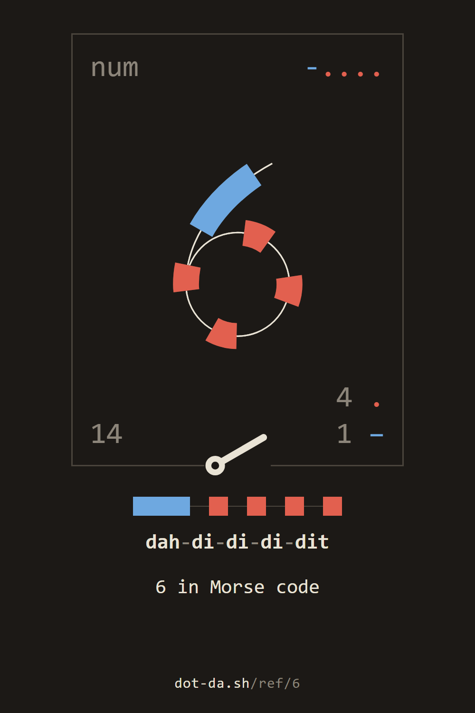
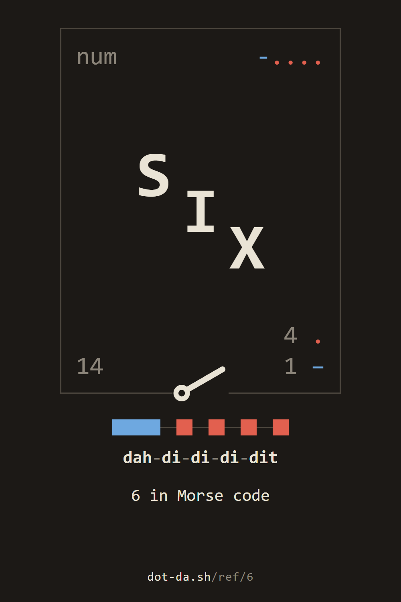
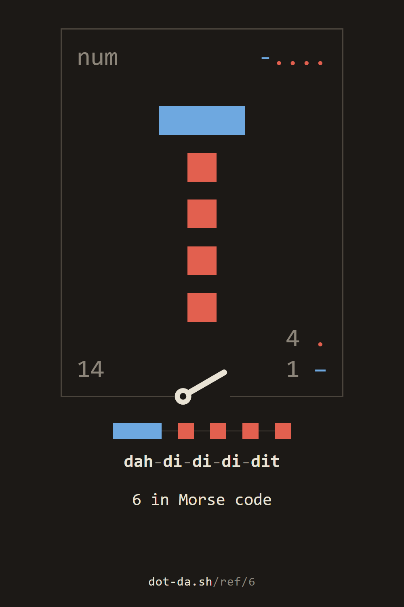

the reference / 6
6 in Morse code
the number 6
num-....6144 .
1 −
SIX
6
~
key it in the station · its card in the reference · hear it (.wav)
to keep









For programs: the parts as JSON, the sound, the keyed card.
the reference / 6
key it in the station · its card in the reference · hear it (.wav)



For programs: the parts as JSON, the sound, the keyed card.